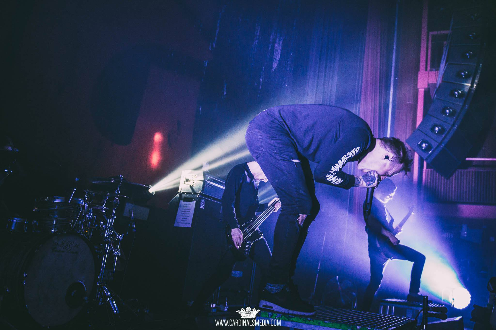

19/02/2016 // Stray From The Path @ Trix Antwerp
Tags: strayfromthepath, hardcore, metal, show, antwerp, trix, alternative, blog, gigcheck
16/02/2016 // Architects @ AB Brussels
Tags: architects, hardcore, metal, metalcore, show, brussels, bxl, AB, anciennebelgique, alternative, blog, gigcheck
27/01/2016 // Citizen @ Kavka Antwerp
Tags: citizen, hardcore, rock, show, antwerp, kavka, alternative, blog, gigcheck
Older posts —>